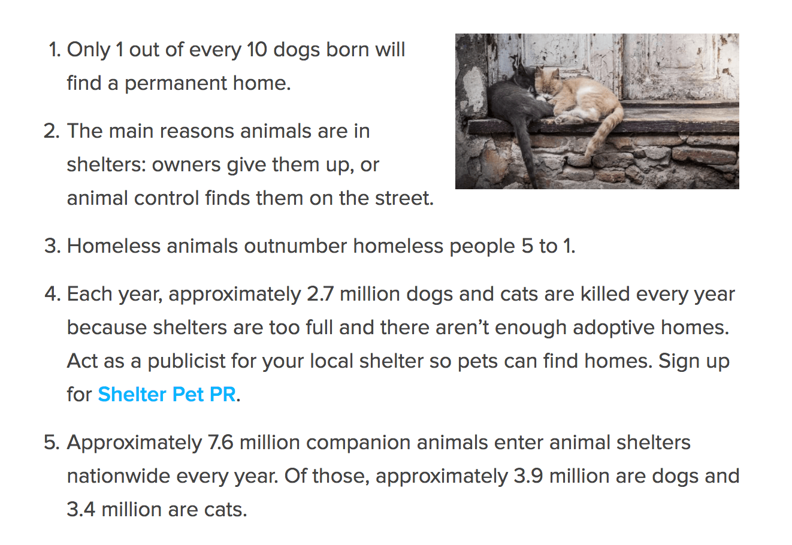
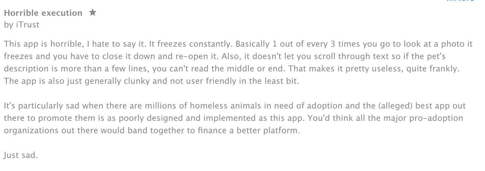
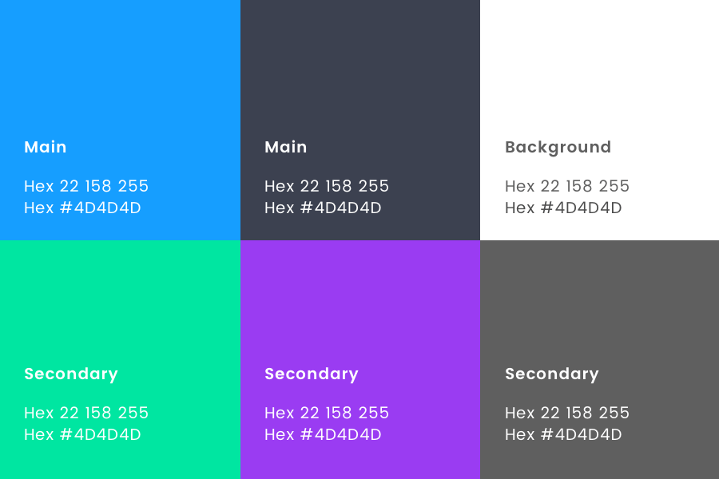

Role
UI / UX
Visual Design
Context
Freelance
Tools
Sketch
Principle
HTML/CSS
Dog Dash is a personal project, aimed to provide the means to connect aspiring pet owners and pet adoption shelters. Our goal in the ideation and execution of Dog Dash was to provide the means for young and old pet owners to adopt a furry friend perfectly suited for his or her lifestyle.
In my experience trying to adopt in recent months, I was unable to find a useful technology that offered a process. My hopes in creating the app is that more people will find the appropriate means to make an adoption choice to find a pet, increase accessibility of adoption, as well as ease common pain points experienced during the traditional pet adoption process. I’m hoping that with more and more advancements and accessibility of technology, these services can provide a necessary change for good, continuing to connect qualified adopters and adoptees (woof).
To get a better sense of the current adoption climate, I turned to Google Trends, evaluating just how open to adoption people are and what exactly these to-be pet owners are searching for.
Evidently, there is a large increase in adoption rates. Whether these adoption shelters can accept that incoming capacity is unknown. Gauging from the existing websites and app ecosystems, it seems they are a ways behind in terms of adopting technology due to budget constraints. Our main goal is to provide the means for both pet adoption shelters and individuals to connect easier, quicker and faster.
The main data reference while building Dog Dash, was a study on pet adoption research commissioned by PetSmart (provided by Ipsos Marketing). The provided research to “conduct an attitude, usage and barriers research study in order to understand and quantify current awareness and preceptions of both pet adoptions and spaying/neuturing of pets, as well as to understand current barriers to using adoption and spay/neuter programs.”
Traditionally, pet owners can find a cat or dog from any reputable shelter or breeder online or through a number of existing online services. We aimed to provide a little more than the current state of adoption apps, providing a built-in application screening process sent and received digitally to speed up the adoption process.
Through some in-depth testing of the competitors on the scene, it appears most users share the same thoughts about the current state of many pet adoption apps. They favor desktop viewing, suffer from an clunky, obtrusive user interfaces, and less-than-optimal search filtering options.
Three different user personas were created, each acting as a primary user within our millennial age group. These young professionals are highly active online, and on their mobile devices and are inclined to use technology to solve problems, and better their lives. Each had specific requirements for the app, such as:
Determining the priority features was the first step before diving into loose, hand-drawn wireframes. We looked closely at our research and user personas to guide the direction of our initial wireframes and customer journeys. In the process of loose wireframing / sketching, we were able to discover the potential pain points, and how we can engineer a clearer path to the user’s ultimate goal.
To hit the ground running, we spent a considerable amount of time sketching out detailed wireframes. Prefer knocking out ideas on paper for fast iteration / adaptation before spending the majority of the time tweaking visual concepts.
At the paper sketching phase, we built a loose sitemap to get a sense of the needed screens, user flow and potential pain points. Combining these flows with our initial research, current competitor painpoints and idea mapping, we were able to move quickly onto prototyping with Invision and Principle. This first prototype is to gauge interest in the app, and was everything but completely flushed out. What it did do, was provide a meaningful representation of how we can make a difference in the pet adoption market.
The main screens of the app were designed with easy navigation in mind for each of the two main, customer facing sides of the application. The app would consist the user side for those looking to adopt, and the organization side for those housing pets for adoption. While similar in visual aesthetic, both featured entirely different features, with different priorities.
We found it necessary for users to search and filter for pets without submitting to signing up, but in the case of applying for pets, and shelters uploading a profile / library of adoptable pets, the user has the option to sign in with email, or using a service like Gmail, or Facebook.
Search:Filtering information for quantity and quality results – the best of both worlds. We also thought it would be important to easily return to this screen as it will be the primary app screen. The home page includes the main search option, whereas the secondary search button maintains the initial search. We felt including both in the same button had the ability to reset the search, deleting most of the user filled information, ultimately a painful user experience.
Search Results:Main priority was to view and analyze multiple results at a time, the major pain point of competitors. Also included is the option switch card views for search results. The main purpose was to quickly scan a number of results quickly, if searched by breed for example, or see a more detailed view of pets.
Another feature of other apps that becomes distracting in the user experience, is catchy sales titles in the pet name section, the most prominent area of the app. Our goal was to eliminate this in favor of a clean, uncluttered interface.
We decided to stick to a tried a true method of organization, top-to-bottom. We wanted to include any personal information above the fold, following modular drawers to contain each of the more detailed information. We thought this could keep this information architecture lean, and unobtrusive.
The brand design / app was meant to convey accessibility across wide range of ages, prioritizing the user experience, a common pitfall of other competitors. Initially, we were a bit in left field with the original style. It included heavy use of tertiary brand colors and the brand font, “Poppins”. We thought this was too far a departure from the intended iOS Human interface guidelines. We decided to backpocket this concepts in favor something more conversative.
Back in my glory days, at the tender of 6 years old, my entire room was decorated with dog curtains, framed pictures, and collection of stuffed animals. I’ve always been adamant about animal rights. With design, and technology in general, I feel it can be a catalyst for good with enough good intention and will power.
Design can create change for good, providing a reasonable means to accomplish a life task both easier, and quicker. Through good design, we can ultimately make this world a better place.
This is a still an ongoing passion project of mine. I have learned a lot creating my own app from conception, and realize how much consideration goes into each detail gathering user research / A/B testing screen iterations with users to better guide a working prototype. We hope to release a working prototype of the app soon.
Want to discuss your ideas for a project or just want to say hi? Awesome! Go ahead, I'd love to connect with you.